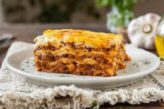

Lasagna Bolognese Recipe
Ingredients:
- 12 lasagna sheets
- 500g ground beef
- 1 onion, finely chopped
- 2 cloves garlic, minced
- 400g canned tomatoes
- 2 tablespoons tomato paste
- 1 teaspoon dried oregano
- 1 teaspoon dried basil
- Salt & black pepper to taste
- 500ml béchamel sauce
- 150g parmesan cheese, grated
- 150g mozzarella cheese, shredded
Instructions:
- Preheat oven to 180°C (350°F).
- In a pan, sauté onions and garlic in olive oil until soft.
- Add ground beef and cook until browned.
- Stir in tomato paste, canned tomatoes, oregano, basil, salt, and pepper. Simmer for 20 minutes.
- In a baking dish, layer lasagna sheets, meat sauce, béchamel sauce, and cheese.
- Repeat layers until all ingredients are used, finishing with cheese on top.
- Bake for 35-40 minutes until golden and bubbly.
- Let rest for 10 minutes before serving.